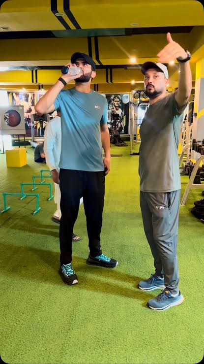

Cricket fitness from the coach who trains Shaheen Shah Afridi. Built for fast bowlers, batters and all-rounders at club, school and academy level who want to bowl quicker, last longer and stay fit all season.

Cricket needs explosive speed, repeated sprints and a body that holds up through long spells. Gym bodybuilding alone doesn't do that.
Lower-body power, core strength and landing strength for fast bowlers.
Acceleration and change of direction for fielding and running between wickets.
Conditioning to bowl long spells and bat long innings without fading.
Routines for the back, shoulders, hamstrings and knees — where cricketers break down.
Who it's for: club cricketers, school and academy players, and young fast bowlers who want to reach the next level.
The main gym exercises fast bowlers build on — and why each one matters. Learn the form with a coach before adding heavy weight.
Builds hip and leg strength for a powerful run-up and drive through the crease.
Single-leg strength and balance for a stable front-foot landing.
Strong hamstrings and glutes help slow the body down safely after delivery.
Low reps, full effort — trains the fast, springy power bowling needs.
Rotational power through the trunk, which links the legs to the bowling arm.
Upper-back strength protects the bowling shoulder and keeps posture strong.
Fast bowlers go through big landing forces every delivery, so lower-back, ankle and knee care matters as much as strength. Every player at the gym starts with a fitness test, and the plan is matched to their age, body and season.
Coach Samad is personal trainer to Shaheen Shah Afridi and works with cricketers at Shaheen Run 4 Life every week. The same principles used at the top level — adapted for your age, level and goals.
Parents: young players are trained with safe, age-appropriate loads. We focus on movement quality first, and heavy weights only when the body is ready.
Message for session times and team or academy groups.
Strength, power and better movement are important parts of bowling speed, along with technique. We train the physical side; your bowling coach works on technique. The two together give the best results.
We work with teenagers using safe, age-appropriate training. Message us with the player's age and level and we'll advise.
Yes — message us on WhatsApp to arrange group sessions for academies, clubs or school teams.
Yes. Batters need speed between wickets, rotational power and endurance for long innings — the programme is adjusted for your role.